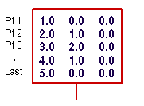
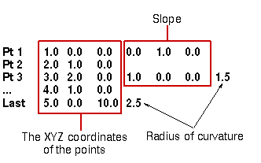

每个点都由一行它的 XYZ 坐标值来描述，中间由制表符或空格分开。
下面是一个点系列，包含5个点来定义一条曲线。
|
 |
|
点的 XYZ 坐标值显示为三列 |
点数据由每行一个点格式化
空行将被忽略
一旦已经读取每行的最大数目的值以后，其余值将被忽略。
每个点都由一行它的 XYZ 坐标值，以及在同行后缀可选的斜率和曲率半径值来描述，所有值用制表符或空格分开。
下面是一个后缀斜率和曲率的点系列文件，包含5个点来定义一条曲线。

|
样条类型 |
点文件类型 |
|
根据极点 |
点系列(3部分 — XYZ) |
|
拟合 |
点系列(3系列 — XYZ) |
|
样条类型 |
点文件类型 |
|
通过点 |
点系列后缀斜率和曲率(5部分 — XYZ、斜率、曲率) |